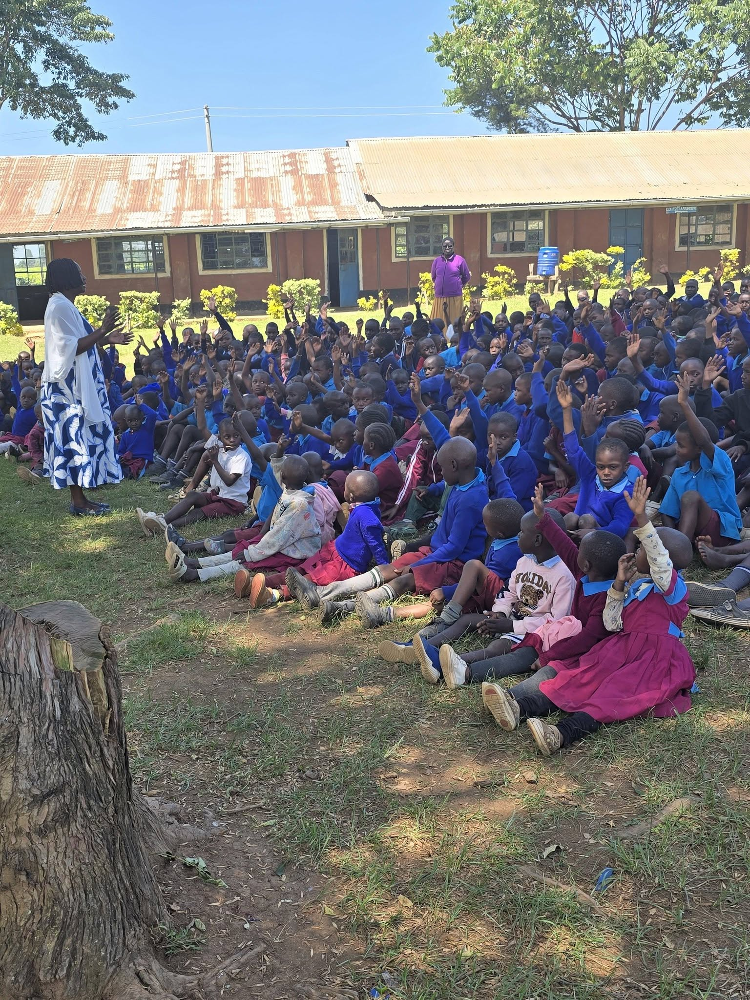

01
Restoring Young Lives
Drug Addiction Prevention, Rehabilitation & Recovery
- Community outreach, screening, and psychosocial support via churches, schools, and peer networks.
- Support to residential rehabilitation modelled on the Kaprisang facility.
- Post-treatment reintegration: vocational training, apprenticeships, mentorship, and start-up kits.
- Youth sports tournaments for energy redirection.
- Community mobilisation against illicit brews and drug peddling.